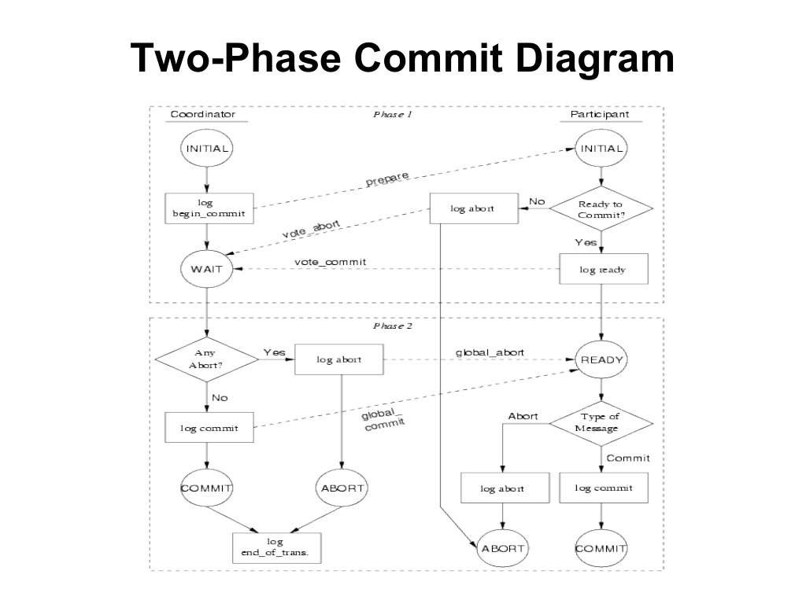
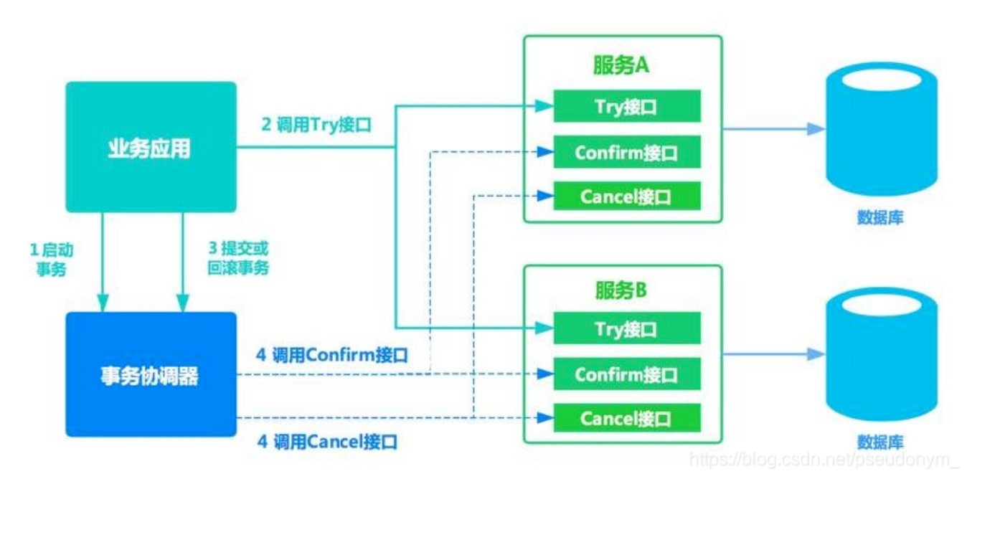

问题定义
对经典的电商场景而言：下单是个插入操作，扣减金额和库存是个更新操作，操作的模型不同，如果进行分布式的服务拆分，则可能无法在一个本地事务里操作几个模型，涉及跨库事务。
CAP 定义
根据 Eric Brewer 提出的 CAP 理论：
- Consistency：All Nodes see the same data at the same time
- Availability：Reads and writes always succeed
- Partition tolerance：System continues to operate despite arbitrary message loss or failure of part of the system
由此诞生三种共识/分布式一致性算法：
- CA = 2PC，即 2PC 无法分区容错
- AP = Gossip，即 Gossip 无法保证一致性
- CP = Paxos，即 Paxos 无法保证吞吐
在分布式场景下，网络分区不可避免。网络分区带来一个不可解决的基本问题：执行本地事务的一个节点，无法确知其他节点的事务执行状况。
BASE 定义
强一致性 = 共识算法 + 复制状态机，2PC
更更新操作成功并返回客户端完成后，所有节点在同⼀一时间的数据完全⼀一致，不不能存在中间状态。例例如⽤用户下单操作，库存减少、⽤用户资⾦金金账户扣减、积分增加等操作必须在⽤用户下单操作完成后必须是⼀一致的。不不能出现库存已经减少，⽽而⽤用户资⾦金金账户尚未扣减，积分也未增加的情况。
弱一致性
系统在数据写⼊入成功之后，不不承诺⽴立即可以读到最新写⼊入的值，也不不会承诺多久之后可以读到。但会尽可能保证在某个时间级别（⽐比如秒级别）之后，可以让数据达到⼀一致性状态。
最终一致性 柔性事务
是弱⼀一致性的⼀一个特例例，系统会保证在⼀一定的时间内，能够达到⼀一个数据⼀一致的状态。业界在⼤大型分布式系统的数据⼀致性上⽐比较推崇的模型。
事务模型
2PC
当代的 2PC 有两种实现方案：经典的 XA 事务，谷歌的 Percolator。
XA 事务简述
对于经典的 XA 事务，⼆阶段提交协议，即将事务的提交过程分为两个阶段来进⾏处理：准备阶段和提交阶段。事务的发起者称协调者（coordinator），事务的执⾏者称参与者（participant）。当⼀个事务跨多个节点时，为了了保持事务的原⼦子性与⼀致性，需要引⼊入⼀个协调者（Coordinator）来统⼀掌控所有参与者的操作结果，并指示它们是否要把操作结果进⾏真正的提交或者回滚。
2PC 的 Failover
Safety：不会出现一个 participant 提交一个 participant 回滚的情况，即无相反态。
Liveness：最终一个分布式事务处于全局提交或者回滚的状态，即无悬垂态（2PC 中的阻塞操作可能引发异常等待）。
一个典型的 2PC 的例子
一个 TC 的主要操作有： 对 participant prepare、对 participant confirm、对 participant abort/cancel。
一个 participant 的主要操作有：返回 ok，返回 not ok，返回 commit 成功，返回 commit 失败，返回 abort/cancel 成功，返回 abort/cancel 失败。

节点超时和宕机会严重降低系统的整体吞吐量。节点中要不断引入重试才能度过各种各样的宕机的困难。
如果没有重试和超时，则任一 participant 节点失灵，都可能导致已经做了 pre-commit 的其他 participant 永久 hang 住，因为 coordinator 会收集不到足够的签名（vote/ballot）而 hang 住。
而如果 coordinator hang 住，结果会更糟，因为再起一个 coordinator 也无法让 hang 住的节点真正提交或者回滚。
这两种情况都是死锁，只有超时检测 + cancel 操作能解决这个问题（见下方的 TCC）。
中心化和去中心化的 2PC
如果存在一个没有业务逻辑的 coordinator，则这种 2PC 是中心化的；如果某个 participant 自己带有 coordinator 的职能，则这种 2PC 可以认为是近于去中心化的。
3PC

这幅图的出处在这里。
三个阶段：CanCommit -> preCommit -> doCommit
第一阶段锁定资源。
第二阶段进入自动提交的轨道。
第三阶段协调者指示手动提交。
3PC是各个阶段都有超时设置的算法，而且在特定的超时阶段–第二、第三阶段，如果协调者察觉到超时，都会尽量发出 abort 指令令事务放弃提交。
但比较特别的是，如果 cohorts（也就是participants）在precommit ack 以后，没有收到 docommit 的命令，它居然就径自根据超时的策略提交了。如果这个时候有abort命令在网络通信中丢失了，岂不是造成了数据不一致？这个问题的一个勉强的答案是，因为在第一阶段协调者 CanCommit 的询问得到了一个全局的yes才能进入这一阶段，所以cohorts只能在超时的时候，姑且走下去。
3PC 的做法，使用一个 canCommit 的阶段来询问，这样一些 cohorts 不在线的问题可以被解决，减少了预扣资源的浪费。
而引入超时，则可以避免死锁。
TCC

所谓的 TCC，指的是：
- Try：完成所有业务检查（一致性），预扣业务资源(准隔离性)。
- Confirm：确认执行业务操作，不做任何业务检查，只使⽤用Try阶段预留留的业务资源
- Cancel：取消Try阶段预扣的业务资源。
Try，Confirm，Cancel。增加的是 cancel 而不是 cancommit 预问阶段，所以实际上还是实现了2PC，而且两个 C 本质上是第二阶段的正反操作。
TCC 对 2PC 的改进是在业务层做资源锁定，这种资源锁定不是直接面向数据库的，通过抽象允许了各种资源通过各种方式来混合在一个分布式事务里协同。
本地模式
其中 tcc 接口不一定要实现在被调用方，可以实现在调用方（类 RMI 模式，bingo！）

try 和 catch 的使用方法
要注意 try 的独立 try-catch 块，且 cancel 时要先检查 try 的状态。

空回滚和事务悬挂
要注意空回滚的忽略问题和事务悬挂的超时检查且释放的功能：

适用 TCC 的业务场景
- 对事务隔离性有要求的服务，Try 阶段的存在可以很好地保证 TCC 事务之间的隔离性 - 这里的隔离指的是 Try 一定要带有预扣资源的功能（而不是像 MVCC 那样的 SNAPSHOT ISOLATION）。
- 对性能有要求的服务，TCC 仅第一阶段加锁，因此性能较好。
- 新服务，没有陈旧的历史包袱，可以方便地抽象出 TCC 的三个阶段。
- 改造成本小，没有历史包袱的服务。
Saga 模型

假设一个分布式场景涉及三个服务，我们要有随时能够从某个失败链条上反向补偿回去，保证全局追平的能力。
这里面要考虑正反操作的请求要线性编排，严格有序。如果有必要，还是要加入类似 update where 的语义。
saga 的中心化实现
SAGA 通常有两种模型，一种是事务协调器器集中协调，由它来收集分支状态并发号施令；另⼀种是基于事件订阅的⽅式让分支之间根据“信号”进⾏交互（我们经常使用的一个服务用一个 MQ 来驱动下一个的服务来追平状态，是一种去中心化的 saga 模型。）。

saga 的两种恢复策略

从这里至少可以抽象出三种接口 compensation、reverseCompensation、needRetry。
saga 的适用场景
- 业务流程多、业务流程⻓，期间调⽤用若⼲干个分⽀支事务。
- ⽆法抽象出 TCC 的 Try 阶段（即无法预扣资源，实现隔离），但是可以很方便地实现补偿⽅法。
- 要求框架支持业务流程既能向前重试⼜可以逆序回滚的（正逆向幂等）。
- 对不不同事务间的隔离性要求不不高，可以在业务层⾯面通过代码解决的。
长事务不能容忍长期锁定，又不需要长期锁定，可以考虑 saga（现实中的分布式事务往往暗合 saga 模型）；反之则可以使用 tcc。
阿里的 Seata 模型衍生的数据库中间件跨库事务
首先要把物理 sql 的改写逻辑抽象化，然后在这里实现一个具体的
然后要在事务的前后加上 WAL：

然后就可以实现跨库事务了：

但跨库事务需要保证本地事务有写隔离，类似全局意向锁：

局部的意向锁实现：

带事务消息中间件（Kafka 的方案）-消息事务
- 从 producer 到 broker：要有 ack 机制。消息要么做好顺序编号生成机制，要么干脆根据消息的内容生成 id。broker 用 ack 给 producer 确认，producer 自己做超时重试（借鉴 TCP 协议的思路）。broker 可以通过一个数据库的主键依赖，或者内存里的 set 对消息 id 进行去重(实际上 Kafka 是通过 leader replica 写入磁盘的方式自己维护了这样一个数据库)。可以认为 producer 到 broker 天然是幂等的，得到了间接的 exactly-once。
- broker 到 consumer：同样要有 consumer 到 broker 的 commit 机制。重点的问题是，consumer 自己做好本地的事务和 commit 操作的原子性。这种原子性如果无法保证（在本地事务完成后未 commit 程序即崩溃），则要考虑在本地做 message id 的去重。即在本地单独维护一张 message 表，在本地事务的原子性操作里囊括对 message 表的同步更新，更新完成后再 commit 到 broker，如果 commit 到 broker 失败，则下次再收到这条消息时，新的事务也会失败。可以认为 broker 到 consumer 并不天然是幂等的，如果消息不天然是幂等的，则需要做本地事务结构的修改。
- 换言之，好的，完整的带事务的消息中间件，只有带上事务性的 RDBMS 这一种基本解。exactly-onece 几乎必然引起性能的下降。但因为 producer-broker、broker-consumer 之间都是局部事务，所以性能比起两段提交，三段提交高了很多。
- 在流处理里面，exactly-once 例来是个难题，只有 Kafka-Stream 真正做到了，如果不是走 Stream，则起码客户端需要做单独处理。
基于本地事件表系统的 scan and send 机制

本质上还是把本地事务和事件在同一个事务里面写入本地数据库，然后写一个单独的服务来 scan 这个 event 表。对业务侵入性很大。
基于外部事件表系统的 prepared and send 机制

大致上就是：
- 把消息 enqueue 给broker，让消息进入 prepared 发射状态。
- 在本地事务执行完成或者失败了以后，发送 confirm 或者 cancel消息给 broker。
- broker 自己也定时扫描 enqueued 的 message，如果超时，按照既定配置来使用消息（通常是准备一个 fallback 接口，在接口里决定硬是发射消息或者取消发射）。
- 这其实是 broker 不提供 ack 机制的时候的一种折中。先 prepare 再 confirm，其实是一种变相的小分布式事务，主事务是本地的数据库事务，辅事务是 broker 事务，辅事务预先分配锁定资源，由主事务激发释放。
- RocketMQ 的分布式事务也是采取这种外部事件表的形式。早期是基于文件系统来实现的，后期是基于数据库来实现的。
我在 bridgemq 问题下的评论
以下评论是错的
~~感觉上这个问题在消息发送方的地方被做得复杂化了。
根据我个人浅薄的理解，这里 bridgemq 的存在，是把这种（事务加 MQ）的解决思路，做成了一个单独的服务，即很多人所说的外部事件表或者外部消息表。
在这个架构里面，本地事务 + bridgemq，其实就是 jta 里面的所谓的预扣资源 + 确认的模式：
1 bridgemq 预扣资源。
2 本地事务预扣资源。
3 本地事务提交或失败。
4 bridgemq 提交或失败。
只不过这里的设计是一个只有两个服务的小 JTA，所以事务的颗粒度更小，而 bridgemq 作为辅助事务，其生命周期完全是由本地事务这个主事务决定的，所以主事务的：
1 性能更更好，2 被 bridgemq 耦合造成的改造更小。
而且这个 bridgemq 的设计，本身只解决了发送方 exactly-once 的问题，正如下面评论所说的，consumer 的 exactly-once 还是要靠业务方自己解决–实际上还是做消息的幂等要求设计或者准备本地事务去重。
实际上，Kafka 当前版本（1.0以后的版本），有了一个全局 exactly-once 的解决方案。据他们估计，可以在 Kafka Stream 里面做到 exactly-once（https://www.confluent.io/blog/exactly-once-semantics-are-possible-heres-how-apache-kafka-does-it/）。即使是在非 Stream 的场景里面，他们的 Producer API 也是支持 exactly once 的。具体地说,新版本的 Producer实际上给每个消息准备了一个序号（sequence no），producer 大部分情况下通过 ack 机制来保证 at-least-once，重复消息，就像 tcp 协议一样通过序号在 broker 这端去重（TCP 是在内存里去重的，Kafka 还支持 leader replica 在分布式场景下用文件系统去重）。这样就达到了 producer 端的 exactly-once 语义，保证了只要通信是可达的，producer 总能正确地发送消息到 broker。
那么套用到这篇文章的场景里面，这个问题就非常简单了，不需要 bridgeMQ 的帮助，只要：
- 本地事务先执行成功。否则中断流程。
- 在 producer 端使用 exactly-once 语义发送消息。
发送端的事务性就达到了。~~
在事务里调 rpc 的铁律
- 无论如何，不依靠补偿和反查，不可能保证事务和网络 io 原子性成功或者失败。而且这两者不可偏废，要引入一个终态管理机制，调度补偿和反查。
- 尽量让所有的 rpc 分成两段，前半段在事务之前，后半段在事务之后执行，在后半段上加上补偿，是最简单的方法。
- 如果无法做到第二条，则把求锁类 rpc 放在事务之前，解锁类 rpc 放在事务之内，把初始化任务类事务放在 rpc 之前，把更新结果类事务放在 rpc 之后。
- 在事务里实现 rpc，只有实现 at-least-once 的语义时有用。很多时候不加任务进行局部重试，或者上游全局重试的话事务太大-或者事务要幂等问题，勉强可以使用这种 at-least-once 语义。
分布式 xa
java7 xa
本文重点参考了：